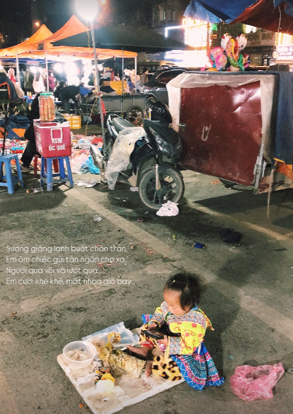
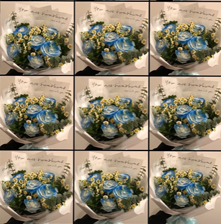

Hành Trình 6 Tháng Yêu Nhau
Tháng 1: Ngày đầu tiên
Hai đứa gặp được nhau bằng 1 cách thần kì nào đó..ông trời có lẽ muốn hai đứa được gặp và yêu thưn nhau nhỉ mng hì hì.. tháng đầu có lẽ là những gì ngây ngô nhất của hai đứa, ngại ngùng từ những lời xưng hô..cho tới khii b ý sẵn sàng tin tưởng và chia sẻ với mình về những gì bạn ý đã trải qua thì tớ biết rằng tình yêu này nó không chỉ đơn giản là tình cờ..có lẽ đó là cái duyên đưa tớ đến với b ý để tớ có thể xoa dịu đi những gì b ý đã trải quaaaaaaa, anh cảm ơn em bé vì đã lựa chọn yêu anh, tin tưởng vào tình iu xa dù cho babiii chưa bao giờ sẵn sàng cho việc nì.. babiii vẫn hy sinh vì tình yêu nì, anh biết ơn những điều đó lắmmmmm >3 *quà đúng gruuuu mng aaa ngây ngô thế đóaaaaa

Tháng 2: Bắt đầu hiểu và lắng nghe nhau hơn.
Hai đứa trong giai đoạn này bắt đầu nghiêm túc hơn với tình yêu nìii, hai đứa cũng có những lúc tâm trạng bất ổn nma hai đứa luôn vì nhau và sẵn sàng lắng nghe, thấu hiểu cho nhau..Nên đối với anh tháng 2 nì thật sự rất ý nghĩa, là bước đệm quan trọng trong hành trình yêu của hai đứaaaa >3
(1).png)
Tháng 3: Bắt đầu những sự nóng nảy...
Tháng 3 có lẽ ngoài những cố gắng của hai đứa và sự thấu hiểu từ tận con tim thì có lẽ là hơi đáng quên mụt chút... tháng 3 khi hai đứa đã quen có sự hiện diện của nhau thì đôi khi lại dễ làm nhau buồn hơn..như tớ, tớ cũng làm b ý buồn nhiều và vô số lần tớ đồng ý chia chân b ý...nhưng sau cùng tớ thấy có lỗi lắm, tớ chỉ muốn cảm ơn bạn ý và tớ rất trân trọng những gì b ý trao cho tớ và đặc biệt là niềm tin to đùng b ý trao cho tớ...babii ơi anh cảm ơn em nhiều nhiều lắm...

Tháng 4: Sinh nhật của bạn ý
Hehee sinh nhật đầu tiên của bạn ý có sự hiện diện của tớ, lúc này b ý đang ở Sapa mng ạ, cũng đánh dấu những lúc hai đứa cách nhau có 38km...hì lúc nì là cũng háo hức lắm r mng ơiiiiiii, lúc này là hai đứa bắt đầu chuẩn bị cho những kế hoạch sắp tới nìiiii, có lẽ sẽ hơi 'unreal' mng ạ, khum nghĩ là sắp được gặp b ý luôn á mnggg oiiiiiiiiiii..dù hơi bùn vì chỉ có 1 day nma chúng tớ cũng đã làm tốt rùi mà đúng honggg hì hì >3

Tháng 5: Có lẽ là ngày đặc biệt nhất...
Vậy là ngày 4/2 xuất hiện, mọi thứ có vẻ mông lung lắm luôn, nhưng mà đây là ngày đặc biệt nhất đời tớ, bọn tớ đươc gặp nhau rùi đó mngggg oiiiii, từ những tháng ngày ở quân sự khóc mếu máo hết lên vì nghĩ nửa năm liệu chúng mình có làm được không đây...liệu tình yêu có thắng nổi khoảng cách không...Nhưng mọi người biết sao hong chúng tớ làm được ruiii, sau bao khó khăn thì có lẽ tình yêu đã níu hai đứa chúng tớ lại cho tới lúc này và mai sau nữa, tớ hạnh phúc lắm mọi người ơiii...Cảm ơn em vì đã tới bên đời anh và cho anh hiểu được nỗ lực vì tình yêu nó đẹp như thế nào bbi nhé :33

Tháng 6: Valentine đầu tiên
Hôm nay là Valentine đầu tiên của chúng ta. Anh hy vọng chúng ta sẽ có thật nhiều Valentine cùng nhau em nhé, valentine đầu tiên cũng là lúc hai đứa trưóc đó có hơi buồn nhau...nhưng ai dám trách hẻ mngg, yêu xa đôi lúc hiểu nhầm không đáng hai đứa cũng buồn lắm, nhưng mà mọi người ơi tình yêu đã cho chúng tớ tìm ra tiếng nói chung, chúng tớ chịu chậm lại và lắng nghe nhau hơn, chúng tớ cho nhau thời gian để phát triển bản thân và tớ đã thấy được 1 healthy love đúng nghĩa, dù cho gia đình bạn ý cóa hơi khum tin vào tình iu bọ xít của chúng tớ nhưng tớ tin rằng với sự nỗ lực và đồng hành của chúng tớ, hai đứa tớ sẽ làm đượccc, CẢM ƠN BBI VÌ ĐÃ YÊU ANH VÀ CHO ANH BIẾT TÌNH YÊU NÓ ĐẸP ĐẼ RA SAO NHÉEE >3 HAPPY VALENTINEEE BABIII IUUUU >33
